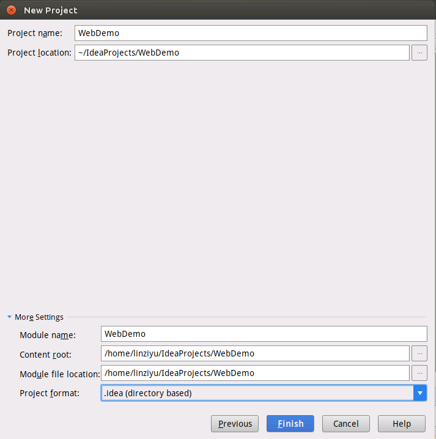
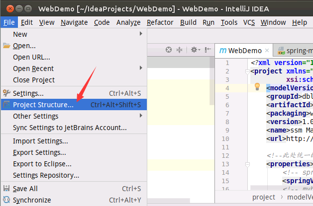
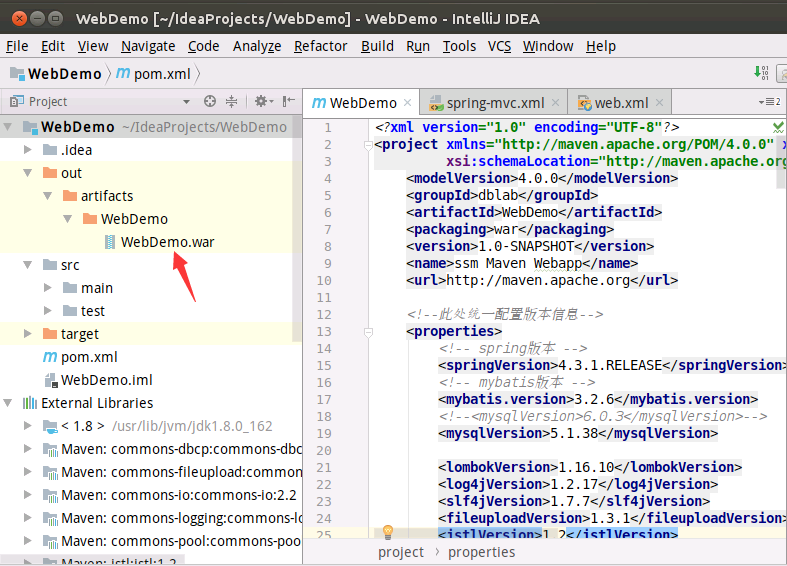
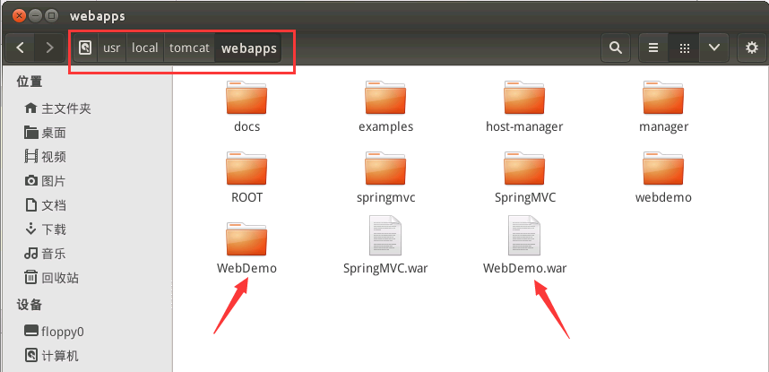

在进行大数据综合案例开发的时候，在进行可视化时，常常会使用到网页对数据分析结果进行可视化展现，对于一些复杂的应用，需要使用Spring+SpringMVC+Mybatis这种组合框架进行开发。为了顺利完成相关的大数据综合实验案例，特此制作Spring+SpringMVC+Mybatis开发简明教程，可以帮助读者迅速掌握相应的开发方法，提高学习效率。
创建工程文件
启动IntelliJ IDEA，在菜单中选择“File–>New–>Project”，在IntelliJ IDEA中新建一个Maven工程，如下图所示，选择Maven工程，点击“Next”按钮：
然后，在下图中，在“GroupID”中填入“dblab”，在ArtifactID中填入“WebDemo”，点击“Next”按钮：
然后，如下图所示，在Project Name中填入“WebDemo”，点击“Finish”按钮：

然后，在WebDemo工程界面中，按照下图所示的目录结构，创建相应的文件夹和文件。

在pom.xml文件中，删除原来的内容，把下面内容复制粘贴进去：
- <?xml version="1.0" encoding="UTF-8"?>
- <project xmlns="http://maven.apache.org/POM/4.0.0" xmlns:xsi="http://www.w3.org/2001/XMLSchema-instance"
- xsi:schemaLocation="http://maven.apache.org/POM/4.0.0 http://maven.apache.org/maven-v4_0_0.xsd">
- <modelVersion>4.0.0</modelVersion>
- <groupId>dblab</groupId>
- <artifactId>WebDemo</artifactId>
- <packaging>war</packaging>
- <version>1.0-SNAPSHOT</version>
- <name>ssm Maven Webapp</name>
- <url>http://maven.apache.org</url>
- <!--此处统一配置版本信息-->
- <properties>
- <!-- spring版本 -->
- <springVersion>4.3.1.RELEASE</springVersion>
- <!-- mybatis版本 -->
- <mybatis.version>3.2.6</mybatis.version>
- <!--<mysqlVersion>6.0.3</mysqlVersion>-->
- <mysqlVersion>5.1.38</mysqlVersion>
- <lombokVersion>1.16.10</lombokVersion>
- <log4jVersion>1.2.17</log4jVersion>
- <slf4jVersion>1.7.7</slf4jVersion>
- <fileuploadVersion>1.3.1</fileuploadVersion>
- <jstlVersion>1.2</jstlVersion>
- <!--<taglibVersion>1.1.2</taglibVersion>-->
- <!--<servletVersion>3.0-alpha-1</servletVersion>-->
- </properties>
- <dependencies>
- <dependency>
- <groupId>junit</groupId>
- <artifactId>junit</artifactId>
- <version>3.8.1</version>
- <scope>test</scope>
- </dependency>
- <!-- spring-->
- <dependency>
- <groupId>org.springframework</groupId>
- <artifactId>spring-beans</artifactId>
- <version>${springVersion}</version>
- </dependency>
- <dependency>
- <groupId>org.springframework</groupId>
- <artifactId>spring-core</artifactId>
- <version>${springVersion}</version>
- </dependency>
- <dependency>
- <groupId>org.springframework</groupId>
- <artifactId>spring-context</artifactId>
- <version>${springVersion}</version>
- </dependency>
- <dependency>
- <groupId>org.springframework</groupId>
- <artifactId>spring-orm</artifactId>
- <version>${springVersion}</version>
- </dependency>
- <!-- spring web + spring MVC-->
- <dependency>
- <groupId>org.springframework</groupId>
- <artifactId>spring-web</artifactId>
- <version>${springVersion}</version>
- </dependency>
- <dependency>
- <groupId>org.springframework</groupId>
- <artifactId>spring-webmvc</artifactId>
- <version>${springVersion}</version>
- </dependency>
- <!-- mybatis核心包 -->
- <dependency>
- <groupId>org.mybatis</groupId>
- <artifactId>mybatis</artifactId>
- <version>${mybatis.version}</version>
- </dependency>
- <!-- mybatis + spring -->
- <dependency>
- <groupId>org.mybatis</groupId>
- <artifactId>mybatis-spring</artifactId>
- <version>1.2.2</version>
- </dependency>
- <!-- DataBase数据库连接 mysql包-->
- <dependency>
- <groupId>mysql</groupId>
- <artifactId>mysql-connector-java</artifactId>
- <version>${mysqlVersion}</version>
- </dependency>
- <!-- 导入dbcp的jar包，用来在applicationContext.xml中配置数据库 -->
- <dependency>
- <groupId>commons-dbcp</groupId>
- <artifactId>commons-dbcp</artifactId>
- <version>1.2.2</version>
- </dependency>
- <!-- log4j配置, 视情况添加-->
- <dependency>
- <groupId>log4j</groupId>
- <artifactId>log4j</artifactId>
- <version>${log4jVersion}</version>
- </dependency>
- <!--<dependency>-->
- <!--<groupId>com.alibaba</groupId>-->
- <!--<artifactId>fastjson</artifactId>-->
- <!--<version>1.1.41</version>-->
- <!--</dependency>-->
- <dependency>
- <groupId>org.slf4j</groupId>
- <artifactId>slf4j-api</artifactId>
- <version>${slf4jVersion}</version>
- </dependency>
- <dependency>
- <groupId>org.slf4j</groupId>
- <artifactId>slf4j-log4j12</artifactId>
- <version>${slf4jVersion}</version>
- </dependency>
- <!--文件上传包-->
- <dependency>
- <groupId>commons-fileupload</groupId>
- <artifactId>commons-fileupload</artifactId>
- <version>${fileuploadVersion}</version>
- </dependency>
- <!-- jsp页面使用的jstl支持-->
- <dependency>
- <groupId>jstl</groupId>
- <artifactId>jstl</artifactId>
- <version>${jstlVersion}</version>
- </dependency>
- <!-- lombok插件导包-->
- <dependency>
- <groupId>org.projectlombok</groupId>
- <artifactId>lombok</artifactId>
- <version>${lombokVersion}</version>
- <scope>provided</scope>
- </dependency>
- </dependencies>
- <build>
- <finalName>ssm</finalName>
- <plugins>
- <!--java8-->
- <plugin>
- <groupId>org.apache.maven.plugins</groupId>
- <artifactId>maven-compiler-plugin</artifactId>
- <configuration>
- <source>1.8</source>
- <target>1.8</target>
- </configuration>
- </plugin>
- <!-- mybatis-generator-maven-plugin-->
- <plugin>
- <groupId>org.mybatis.generator</groupId>
- <artifactId>mybatis-generator-maven-plugin</artifactId>
- <version>1.3.2</version>
- <configuration>
- <verbose>true</verbose>
- <overwrite>true</overwrite>
- </configuration>
- </plugin>
- </plugins>
- </build>
- </project>
在MainController.java文件中输入如下代码：
- package xmu.dblab.controller;
- import org.springframework.stereotype.Controller;
- import org.springframework.web.bind.annotation.RequestMapping;
- import org.springframework.web.bind.annotation.RequestMethod;
- /**
- * Created by linziyu
- * On 6/4/2018.16:28 PM
- */
- @Controller
- public class MainController {
- @RequestMapping(value = "test", method = RequestMethod.GET)
- public String test(){
- // 实际返回的是views/test.jsp ,spring-mvc.xml中配置过前后缀
- return "test";
- }
- }
在web.xml文件中输入如下代码：
- <?xml version="1.0" encoding="UTF-8"?>
- <web-app xmlns:xsi="http://www.w3.org/2001/XMLSchema-instance"
- xmlns="http://java.sun.com/xml/ns/javaee"
- xsi:schemaLocation="http://java.sun.com/xml/ns/javaee http://java.sun.com/xml/ns/javaee/web-app_3_0.xsd"
- version="3.0">
- <!-- 地址为http://localhost:8080/ 显示的默认网页-->
- <welcome-file-list>
- <welcome-file>/index.jsp</welcome-file>
- </welcome-file-list>
- <!-- spring MVC config start-->
- <servlet>
- <servlet-name>spring</servlet-name>
- <servlet-class>org.springframework.web.servlet.DispatcherServlet</servlet-class>
- <init-param>
- <param-name>contextConfigLocation</param-name>
- <!-- 此处指向的的是SpringMVC的配置文件 -->
- <param-value>classpath:META-INF/spring-mvc.xml</param-value>
- </init-param>
- <!--配置容器在启动的时候就加载这个servlet并实例化-->
- <load-on-startup>1</load-on-startup>
- </servlet>
- <servlet-mapping>
- <servlet-name>spring</servlet-name>
- <url-pattern>/</url-pattern>
- </servlet-mapping>
- <!-- spring MVC config end-->
- </web-app>
在spring-mvc.xml文件中输入如下代码：
- <?xml version="1.0" encoding="UTF-8"?>
- <beans xmlns="http://www.springframework.org/schema/beans"
- xmlns:xsi="http://www.w3.org/2001/XMLSchema-instance"
- xmlns:context="http://www.springframework.org/schema/context"
- xmlns:mvc="http://www.springframework.org/schema/mvc"
- xsi:schemaLocation="http://www.springframework.org/schema/beans
- http://www.springframework.org/schema/beans/spring-beans-4.1.xsd
- http://www.springframework.org/schema/context
- http://www.springframework.org/schema/context/spring-context-4.1.xsd
- http://www.springframework.org/schema/mvc
- http://www.springframework.org/schema/mvc/spring-mvc-4.1.xsd">
- <!-- 启动注解驱动的spring MVC功能,注册请求url和注解POJO类方法的映射-->
- <mvc:annotation-driven />
- <!-- 对模型视图名称的解析,在请求时模型视图名称添加前后缀 -->
- <context:component-scan base-package="xmu.dblab" />
- <!-- 静态资源访问，方案2 (表示不对静态资源如CSS、JS、HTML等进行拦截) -->
- <mvc:default-servlet-handler />
- <bean id="viewResolver" class="org.springframework.web.servlet.view.InternalResourceViewResolver">
- <property name="viewClass" value="org.springframework.web.servlet.view.JstlView" />
- <property name="prefix" value="/WEB-INF/views/" /> <!-- 前缀 -->
- <property name="suffix" value=".jsp" /> <!-- 后缀 -->
- </bean>
- </beans>
在test.jsp文件中输入如下代码：
- <%--
- Created by IntelliJ IDEA.
- User: linziyu
- Date: 18-5-8
- Time: 下午3:18
- To change this template use File | Settings | File Templates.
- --%>
- <%@ page contentType="text/html;charset=UTF-8" language="java" %>
- <html>
- <head>
- <title>Title</title>
- </head>
- <body>
- linziyu test
- </body>
- </html>
在index.jsp文件中输入如下代码：
- <%--
- Created by IntelliJ IDEA.
- User: linziyu
- Date: 18-5-8
- Time: 下午3:31
- To change this template use File | Settings | File Templates.
- --%>
- <%@ page contentType="text/html;charset=UTF-8" language="java" %>
- <html>
- <head>
- <title>Title</title>
- </head>
- <body>
- webdemo index page linziyu
- </body>
- </html>
WebDemo工程就建好了，如果你觉得一步步创建文件比较麻烦，也可以直接到百度云盘下载源代码文件（下载），进入百度云盘以后，点击进入“WebDemo工程文件1”这个子目录，下载该目录下的WebDemo.rar压缩文件，然后解压缩即可。
对工程文件进行编译打包
WebDemo工程建好以后，就可以进行编译打包。
进入WebDemo工程界面，如下图所示，在左侧的工程管理视图中，找到pom.xml，双击鼠标打开该文件。
然后，如下图所示，在pom.xml文件窗口内的任意位置，单击鼠标右键，在弹出的菜单中，选择“Maven”，然后在弹出的下一级菜单中，点击“Download sources and documentation”，完成依赖包的导入操作。
然后，如下图所示，就可以看到已经导入的很多依赖jar包。
然后，添加Artifact包。如下图所示，在工程界面顶部菜单中选择“File–>Project Structure…”。

然后，如下图所示，依次点击Aritifacts，绿色加号，Web Application: Exploded，From modules…。
然后，如下图所示，点击OK按钮。
如下图所示，把Name后面的文本框里面的内容修改为“WebDemo”，把Type后面的下拉列表的内容选择为“Web Application:Archive”，然后，点击OK按钮。
然后，如下图所示，在工程界面的顶部菜单，选择“Build”，在弹出的菜单中选择“Build Artifacts…”：
然后，弹出如下图所示的菜单，选择“WebDemo”，再选择“Build”。
然后，从下面界面中，可以看到，在左侧的工程目录中，在“out–>artifacts–>WebDemo”目录下，生成了一个WebDemo.war文件。

把WebDemo.war发布到Tomcat中
假设你的Linux系统中已经安装好了Tomcat服务器，如果还没有安装，请参考《在Ubuntu16.04中安装Tomcat8》完成安装。
然后，进入Tomcat安装目录，进入conf子目录，使用vim编辑器打开server.xml文件，命令如下：
- cd /usr/local/tomcat
- cd conf
- vim server.xml
打开server.xml文件以后，首先，如下图所示，修改网页服务器端口号为9999。
然后，在里面增加如下一行语句：
<Context path="/webdemo" docBase="./WebDemo" debug="0" reloadable="true"/>
增加后的效果如下图所示：
然后，保存并退出server.xml文件，重新启动Tomcat服务器（重启方法，请参考博客《在Ubuntu16.04中安装Tomcat8》）。
然后，在Linux系统中，打开一个文件管理器，如下图所示，找到WebDemo.war文件所在的目录，比如，笔者的目录是“/home/linziyu/IdeaProjects/out/artifacts/WebDemo/WebDemo.war”，然后，把WebDemo.war复制到你机器上的Tomcat的安装目录的webapps目录下，比如“/usr/local/tomcat/webapps”。
如下图所示，把WebDemo.war复制到“/usr/local/tomcat/webapps”目录下面以后，会自动生成一个WebDemo文件夹。

然后，打开一个浏览器，在地址栏中输入“http://localhost:9999/webdemo/test”，就可以看到网页中显示了“linziyu test”这一行文本内容，说明网页测试成功了。
实现Spring MVC和Spring的整合
在和spring-mvc.xml相同的目录下，新建另外一个文件spring-mybatis.xml，内容如下：
- <beans xmlns="http://www.springframework.org/schema/beans"
- xmlns:xsi="http://www.w3.org/2001/XMLSchema-instance" xmlns:p="http://www.springframework.org/schema/p"
- xmlns:context="http://www.springframework.org/schema/context"
- xmlns:mvc="http://www.springframework.org/schema/mvc"
- xsi:schemaLocation="http://www.springframework.org/schema/beans
- http://www.springframework.org/schema/beans/spring-beans-3.1.xsd
- http://www.springframework.org/schema/context
- http://www.springframework.org/schema/context/spring-context-3.1.xsd
- http://www.springframework.org/schema/mvc
- http://www.springframework.org/schema/mvc/spring-mvc-4.0.xsd">
- <!-- 自动扫描 -->
- <context:component-scan base-package="xmu.dblab">
- <!-- 扫描时跳过 @Controller 注解的JAVA类（控制器） -->
- <context:exclude-filter type="annotation" expression="org.springframework.stereotype.Controller"/>
- </context:component-scan>
- </beans>
然后，要对之前已经建好的web.xml文件进行补充完善，新增如下内容：
- <!--加载Spring的配置文件到上下文中去-->
- <context-param>
- <param-name>contextConfigLocation</param-name>
- <param-value>
- classpath:META-INF/spring-mybatis.xml
- </param-value>
- </context-param>
- <!-- Spring监听器 -->
- <listener>
- <listener-class>org.springframework.web.context.ContextLoaderListener</listener-class>
- </listener>
- <!-- 字符集过滤 -->
- <filter>
- <filter-name>encodingFilter</filter-name>
- <filter-class>org.springframework.web.filter.CharacterEncodingFilter</filter-class>
- <init-param>
- <param-name>encoding</param-name>
- <param-value>UTF-8</param-value>
- </init-param>
- <init-param>
- <param-name>forceEncoding</param-name>
- <param-value>true</param-value>
- </init-param>
- </filter>
- <filter-mapping>
- <filter-name>encodingFilter</filter-name>
- <url-pattern>/*</url-pattern>
- </filter-mapping>
从上面新增的内容可以看出，这里新引入了Spring-mybaits配置文件、Spring监听器和字符集过滤。
修改完善后的web.xml的完整内容如下：
- <?xml version="1.0" encoding="UTF-8"?>
- <web-app xmlns:xsi="http://www.w3.org/2001/XMLSchema-instance"
- xmlns="http://java.sun.com/xml/ns/javaee"
- xsi:schemaLocation="http://java.sun.com/xml/ns/javaee http://java.sun.com/xml/ns/javaee/web-app_3_0.xsd"
- version="3.0">
- <!-- 地址为http://localhost:8080/ 显示的默认网页-->
- <welcome-file-list>
- <welcome-file>/index.jsp</welcome-file>
- </welcome-file-list>
- <!--加载Spring的配置文件到上下文中去-->
- <context-param>
- <param-name>contextConfigLocation</param-name>
- <param-value>
- classpath:META-INF/spring-mybatis.xml
- </param-value>
- </context-param>
- <!-- spring MVC config start-->
- <servlet>
- <servlet-name>spring</servlet-name>
- <servlet-class>org.springframework.web.servlet.DispatcherServlet</servlet-class>
- <init-param>
- <param-name>contextConfigLocation</param-name>
- <!-- 此处指向的的是SpringMVC的配置文件 -->
- <param-value>classpath:META-INF/spring-mvc.xml</param-value>
- </init-param>
- <!--配置容器在启动的时候就加载这个servlet并实例化-->
- <load-on-startup>1</load-on-startup>
- </servlet>
- <servlet-mapping>
- <servlet-name>spring</servlet-name>
- <url-pattern>/</url-pattern>
- </servlet-mapping>
- <!-- spring MVC config end-->
- <!-- Spring监听器 -->
- <listener>
- <listener-class>org.springframework.web.context.ContextLoaderListener</listener-class>
- </listener>
- <!-- 字符集过滤 -->
- <filter>
- <filter-name>encodingFilter</filter-name>
- <filter-class>org.springframework.web.filter.CharacterEncodingFilter</filter-class>
- <init-param>
- <param-name>encoding</param-name>
- <param-value>UTF-8</param-value>
- </init-param>
- <init-param>
- <param-name>forceEncoding</param-name>
- <param-value>true</param-value>
- </init-param>
- </filter>
- <filter-mapping>
- <filter-name>encodingFilter</filter-name>
- <url-pattern>/*</url-pattern>
- </filter-mapping>
- </web-app>
完成上述Spring MVC和Spring的整合配置以后，下面在xmu.dblab.service这个包下面新建一个TestService接口，该接口文件代码内容如下：
- package xmu.dblab.service;
- public interface TestService {
- public String test();
- }
下面就可以编写TestServiceImpl，实现TestService接口并实现其test()方法， 代码如下：
- package xmu.dblab.service.impl;
- import xmu.dblab.service.TestService;
- import org.springframework.stereotype.Service;
- /**
- * Created by linziyu
- * On 6/5/2018.16:43 PM
- */
- @Service
- public class TestServiceImpl implements TestService {
- public String test() {
- return "test";
- }
- }
然后，去修改之前已经创建的MainController类，修改后的效果如下：
- package xmu.dblab.controller;
- import xmu.dblab.service.TestService;
- import org.springframework.stereotype.Controller;
- import org.springframework.web.bind.annotation.RequestMapping;
- import org.springframework.web.bind.annotation.RequestMethod;
- import org.springframework.beans.factory.annotation.Autowired;
- import org.springframework.web.bind.annotation.ResponseBody;
- /**
- * Created by linziyu
- * On 6/4/2018.16:28 PM
- */
- @Controller
- public class MainController {
- @Autowired
- private TestService testService;
- @RequestMapping(value = "test", method = RequestMethod.GET)
- public String test(){
- // 实际返回的是views/test.jsp ,spring-mvc.xml中配置过前后缀
- return "test";
- }
- @RequestMapping(value = "springtest", method = RequestMethod.GET)
- public String springTest(){
- return testService.test();
- }
- }
在上面代码中，我们定义了testService，@Autowired注释会自动帮我们进行匹配装载，找到testService的实现。
按照之前介绍的编译打包方法，再次打包生成WebDemo.war文件，把Tomcat的“/usr/local/tomcat/webapps/”目录下原来的WebDemo.war删除（注意把webdemo文件夹也删除），把新打包得到的WebDemo.war文件复制到该目录下，再次打开浏览器，在地址栏中输入“http://localhost:9999/webdemo/springtest”，会出现如下所示效果：
可以看出，网页已经可以成功显示，说明Spring MVC和Spring的整合已经成功。
实现Spring、Spring MVC和Mybatis三者的融合
现在开始要通过网页程序对MySQL数据库进行操作。这里假设已经在Linux系统中安装了MySQL数据库，如果还没有安装，请参考《Ubuntu安装MySQL及常用操作》进行安装。
首先，进入Linux系统，打开一个终端（也就是进入shell命令环境），使用如下命令启动MySQL数据库：
- service mysql start
然后，使用如下命令启动进入MySQL shell环境：
- mysql -u root -p
系统会提示你输入数据库密码，然后，就会进入MySQL shell环境，接下来就可以使用SQL语句创建数据库和表，具体命令如下：
- mysql> create database web_demo;
- mysql> use web_demo;
- mysql> create table user(
- id int(20) not null auto_increment,
- username varchar(50) ,
- sex varchar(10),
- birthday date,
- address varchar(100),
- primary key(id)
- );
- mysql> desc user;
- mysql>insert into user(id,username,sex,birthday,address) values(1,‘linziyu’,‘男’,'1978-12-22','厦门大学');
- mysql>select * from user;
查看user表的效果如下图所示：
如下图所示，构建相关目录和文件，和上面的步骤相比，这里新增的内容包括jdbc.properties、spring-mybatis.xml（上一步原来就有这个文件，这里补充了一些新的内容）、User.java、UserMapper.java、UserMapper.xml、UserService.java、UserServiceImpl.java、TestController.java。
如果你觉得一步步创建文件比较麻烦，也可以直接到百度云盘下载源代码文件（下载），进入百度云盘以后，点击进入“WebDemo工程文件2”这个子目录，下载该目录下的WebDemo.rar压缩文件，然后解压缩即可。
(1)jdbc.properties文件
jdbc.properties文件的内容如下：
#数据源
jdbc.driver=com.mysql.jdbc.Driver
jdbc.url=jdbc:mysql://localhost:3306/web_demo?useUnicode=true&characterEncoding=utf-8
jdbc.username=root
jdbc.password=123456
#初始化连接池连接数
initialSize=0
#连接池最大连接数
maxActive=20
#连接池最大空闲
maxIdle=20
#连接池最小空闲
minIdle=1
#最大等待时间
maxWait=60000
jdbc.properties文件设置了数据库连接的相关参数，jdbc.password是数据库密码，需要修改成你自己数据库的密码。
(2)spring-mybatis.xml文件
spring-mybatis.xml（上一步原来就有这个文件，这里补充了一些新的内容），修改后的内容如下：
- <beans xmlns="http://www.springframework.org/schema/beans"
- xmlns:xsi="http://www.w3.org/2001/XMLSchema-instance" xmlns:p="http://www.springframework.org/schema/p"
- xmlns:context="http://www.springframework.org/schema/context"
- xmlns:mvc="http://www.springframework.org/schema/mvc"
- xsi:schemaLocation="http://www.springframework.org/schema/beans
- http://www.springframework.org/schema/beans/spring-beans-3.1.xsd
- http://www.springframework.org/schema/context
- http://www.springframework.org/schema/context/spring-context-3.1.xsd
- http://www.springframework.org/schema/mvc
- http://www.springframework.org/schema/mvc/spring-mvc-4.0.xsd">
- <!-- 自动扫描 -->
- <context:component-scan base-package="xmu.dblab">
- <!-- 扫描时跳过 @Controller 注解的JAVA类（控制器） -->
- <context:exclude-filter type="annotation" expression="org.springframework.stereotype.Controller"/>
- </context:component-scan>
- <!-- 加载配置文件 -->
- <context:property-placeholder location="classpath:/META-INF/jdbc.properties" />
- <bean id="dataSource" class="org.apache.commons.dbcp.BasicDataSource" destroy-method="close">
- <property name="driverClassName" value="${jdbc.driver}" />
- <property name="url" value="${jdbc.url}" />
- <property name="username" value="${jdbc.username}" />
- <property name="password" value="${jdbc.password}" />
- <property name="initialSize" value="${initialSize}" /> <!--初始化连接池连接数-->
- <property name="maxActive" value="${maxActive}" /> <!--连接池最大连接数-->
- <property name="maxIdle" value="${maxIdle}" /> <!--连接池最大空闲-->
- <property name="minIdle" value="${minIdle}" /> <!--连接池最小空闲-->
- <property name="maxWait" value="${maxWait}" /> <!--连接最大等待时间-->
- </bean>
- <bean id="sqlSessionFaction" class="org.mybatis.spring.SqlSessionFactoryBean">
- <property name="dataSource" ref="dataSource" />
- <!-- 自动扫描mapping.xml文件 -->
- <property name="mapperLocations" value="classpath:/mapping/*.xml" />
- </bean>
- <bean class="org.mybatis.spring.mapper.MapperScannerConfigurer">
- <property name="basePackage" value="xmu.dblab.mapping" />
- <property name="sqlSessionFactoryBeanName" value="sqlSessionFaction" />
- </bean>
- <bean id="transactionManager" class="org.springframework.jdbc.datasource.DataSourceTransactionManager">
- <property name="dataSource" ref="dataSource" />
- </bean>
- </beans>
从上面这个文件的内容可以看出，与上一步相比，这里新增了关于数据库配置文件jdbc.properties的设置，同时新增加了扫描mapping.xml文件的相关设置。
(3)User.java文件
User.java文件为数据库web_demo中的user表定义了一个User对象，user表中的字段成为User对象中的属性。
- package xmu.dblab.pojo;
- import java.util.Date;
- public class User {
- private Integer id;
- private String username;
- private Date birthday;
- private String sex;
- private String address;
- public Integer getId() {
- return id;
- }
- public void setId(Integer id) {
- this.id = id;
- }
- public String getUsername() {
- return username;
- }
- public void setUsername(String username) {
- this.username = username == null ? null : username.trim();
- }
- public Date getBirthday() {
- return birthday;
- }
- public void setBirthday(Date birthday) {
- this.birthday = birthday;
- }
- public String getSex() {
- return sex;
- }
- public void setSex(String sex) {
- this.sex = sex == null ? null : sex.trim();
- }
- public String getAddress() {
- return address;
- }
- public void setAddress(String address) {
- this.address = address == null ? null : address.trim();
- }
- }
（4）UserMapper.java文件
UserMapper.java文件的内容如下：
- package xmu.dblab.mapping;
- import xmu.dblab.pojo.User;
- import org.apache.ibatis.annotations.Delete;
- import org.apache.ibatis.annotations.Insert;
- import org.apache.ibatis.annotations.ResultMap;
- import org.apache.ibatis.annotations.Select;
- import org.apache.ibatis.annotations.SelectKey;
- import org.apache.ibatis.annotations.Update;
- public interface UserMapper {
- void insert(User user);
- User selectById(Integer id);
- }
该文件定义了一个接口UserMapper，该接口里面定义了两个方法，即insert和selectById。
（5）UserMapper.xml文件
UserMapper.xml文件的内容如下：
- <?xml version="1.0" encoding="UTF-8"?>
- <!DOCTYPE mapper PUBLIC "-//mybatis.org//DTD Mapper 3.0//EN"
- "http://mybatis.org/dtd/mybatis-3-mapper.dtd">
- <!-- 命名空间，可以对sql进行分类的一个管理 -->
- <mapper namespace="xmu.dblab.mapping.UserMapper">
- <!-- 根据ID查询-->
- <select id="selectById" parameterType="int" resultType="xmu.dblab.pojo.User">
- select *
- from user where id=#{id};
- </select>
- <!-- 插入-->
- <insert id="insert" parameterType="xmu.dblab.pojo.User">
- insert into user
- (id,username,birthday,sex,address)values(#{id},#{username},#{birthday},#{sex},#{address});
- </insert>
- </mapper>
UserMapper.xml文件是和UserMapper.java文件对应的，在UserMapper.xml文件中，必须对UserMapper.java文件中定义的接口方法进行描述，使其和具体的SQL语句绑定。
（6）UserService.java文件
UserService.java文件的内容如下：
- package xmu.dblab.service;
- import xmu.dblab.pojo.User;
- public interface UserService {
- public void insert(User user);
- }
UserService.java文件中定义了一个接口UserService，并定义了接口中可以被上层的控制层调用的所有方法。
（7）UserServiceImpl.java文件
UserServiceImpl.java文件的内容如下：
- package xmu.dblab.service.impl;
- import xmu.dblab.pojo.User;
- import xmu.dblab.mapping.UserMapper;
- import xmu.dblab.service.UserService;
- import org.springframework.beans.factory.annotation.Autowired;
- import org.springframework.stereotype.Service;
- /**
- * Created by linziyu
- * on 6/17/2018.
- */
- @Service
- public class UserServiceImpl implements UserService {
- @Autowired
- private UserMapper userMapper;
- @Override
- public void insert(User user) {
- userMapper.insert(user);
- }
- }
UserServiceImpl.java文件是和UserService.java文件对应的，在UserServiceImpl.java文件中，需要给出UserService.java文件中定义的接口中的相关方法的具体实现。
（8）TestController.java文件
TestController.java文件的内容如下：
- package xmu.dblab.controller;
- import xmu.dblab.pojo.User;
- import xmu.dblab.service.UserService;
- import org.springframework.stereotype.Controller;
- import org.springframework.web.bind.annotation.RequestMapping;
- import org.springframework.web.bind.annotation.RequestMethod;
- import org.springframework.beans.factory.annotation.Autowired;
- import org.springframework.web.bind.annotation.ResponseBody;
- /**
- * Created by linziyu
- * On 6/17/2018.16:28 PM
- */
- @Controller
- @RequestMapping("/mybatistest")
- public class TestController {
- @Autowired
- private UserService userService;
- @RequestMapping(value = "insertoneuser")
- public @ResponseBody String insertoneuser(){
- User user = new User();
- user.setId(2);
- user.setUsername("林子雨");
- user.setAddress("厦门大学");
- userService.insert(user);
- return "success";
- }
- }
按照TestController.java文件的定义，当在浏览器中输入网址“http://localhost:9999/webdemo/mybatistest/insertoneuser”的时候，就会向MySQL数据库的web_demo中的user表中插入一条记录。
按照上面给出的8个文件的内容，构建好工程目录和文件，然后，就可以按照前面介绍的方法，对工程进行编译打包，得到WebDemo.war。到“/usr/local/tomcat/webapps”目录下，把原来已经存在的WebDemo.war删除（记得同时删除WebDemo和webdemo文件夹），把本步骤刚刚打包得到的新的WebDemo.war文件复制到“/usr/local/tomcat/webapps”目录下。
然后，在Linux系统中打开浏览器，在浏览器中输入网址“http://localhost:9999/webdemo/mybatistest/insertoneuser”，回车，就会向MySQL数据库的web_demo中的user表中插入一条记录，并在网页中显示success，如下图所示：
为了验证确实已经有一条新的记录被插入到了MySQL数据库中，可以再次回到MySQL Shell环境中，输入如下命令查看：
- mysql> select * from user;
如果能够看到新增的记录（如下图所示），就说明执行成功了。
把后端数据提交给网页显示
下面又需要对一些代码进行修改。如果你觉得一步步创建文件比较麻烦，也可以直接到百度云盘下载源代码文件（下载），进入百度云盘以后，点击进入“WebDemo工程文件3”这个子目录，下载该目录下的WebDemo.rar压缩文件，然后解压缩即可。
首先，修改UserServiceImpl.java文件和UserService.java文件，增加一个方法 selectById，也就是根据用户id来查找用户信息。
修改后的UserService.java文件内容如下：
- package xmu.dblab.service;
- import xmu.dblab.pojo.User;
- public interface UserService {
- public void insert(User user);
- public User selectById(int userId);
- }
修改后的UserServiceImpl.java文件内容如下：
- package xmu.dblab.service.impl;
- import xmu.dblab.pojo.User;
- import xmu.dblab.mapping.UserMapper;
- import xmu.dblab.service.UserService;
- import org.springframework.beans.factory.annotation.Autowired;
- import org.springframework.stereotype.Service;
- /**
- * Created by linziyu
- * on 6/17/2018.
- */
- @Service
- public class UserServiceImpl implements UserService {
- @Autowired
- private UserMapper userMapper;
- @Override
- public void insert(User user) {
- userMapper.insert(user);
- }
- @Override
- public User selectById(int userId) {
- return userMapper.selectById(userId);
- }
- }
然后，修改TestController.java文件，增加一个getoneuser方法。
修改后的TestController.java文件的内容如下：
- package xmu.dblab.controller;
- import xmu.dblab.pojo.User;
- import xmu.dblab.service.UserService;
- import org.springframework.stereotype.Controller;
- import org.springframework.web.bind.annotation.RequestMapping;
- import org.springframework.web.bind.annotation.RequestMethod;
- import org.springframework.beans.factory.annotation.Autowired;
- import org.springframework.web.bind.annotation.ResponseBody;
- import org.springframework.web.servlet.ModelAndView;
- /**
- * Created by linziyu
- * On 6/17/2018.16:28 PM
- */
- @Controller
- @RequestMapping("/mybatistest")
- public class TestController {
- @Autowired
- private UserService userService;
- @RequestMapping(value = "insertoneuser")
- public @ResponseBody String insertoneuser(){
- User user = new User();
- user.setId(2);
- user.setUsername("林子雨");
- user.setAddress("厦门大学");
- userService.insert(user);
- return "success";
- }
- @RequestMapping(value = "getoneuser")
- public ModelAndView getoneuser(){
- User user = userService.selectById(1);
- return new ModelAndView("getoneuser", "user", user);
- }
- }
从修改后的TestController.java可以看出，当在浏览器中输入网址“http://localhost:9999/webdemo/mybatistest/getoneuser”时，会调用getoneuser方法，从数据库中查找id为1的用户的信息，并把返回的数据封装在ModelAndView对象中。在ModelAndView(“getoneuser”, “user”, user)中，括号中的第1个参数”getoneuser”是viewName，也就是视图的名称，也就是要显示的网页，实际上根据spring-mvc.xml中的配置，它会被解析成“/WEB-INF/views/getoneuser.jsp”；第2个参数是modelName，也就是模型的名称，也就是要提交给网页的对象的名称是”user”，第3个参数是具体的值。如果看成是一个<key,value>键值对，那么，key是“user”，value是user对象，在网页中可以根据这个key来获取到user对象。
在WebDemo工程的“webapp/WEB-INF/views”目录下新增一个文件getoneuser.jsp，如下图所示。
getoneuser.jsp的内容如下：
- <%--
- Created by IntelliJ IDEA.
- User: linziyu
- Date: 18-6-18
- Time: ??3:13
- To change this template use File | Settings | File Templates.
- --%>
- <%@ page contentType="text/html;charset=UTF-8" language="java" %>
- <%@ taglib prefix="c" uri="http://java.sun.com/jsp/jstl/core"%>
- <!DOCTYPE html PUBLIC "-//W3C//DTD HTML 4.01 Transitional//EN" "http://www.w3.org/TR/html4/loose.dtd">
- <html>
- <head>
- <title>WebDemo</title>
- </head>
- <body>
- WebDemo<br>
- <c:if test="${requestScope.user!=null}">
- <br>id:${requestScope.user.id}
- <br>username:${requestScope.user.username}
- <br>sex:${requestScope.user.sex}
- <br>birthday:${requestScope.user.birthday}
- <br>address:${requestScope.user.address}
- <br>
- </c:if>
- </body>
- </html>
最后，就可以按照前面介绍的方法，对工程进行编译打包，得到WebDemo.war。到“/usr/local/tomcat/webapps”目录下，把原来已经存在的WebDemo.war删除（记得同时删除WebDemo和webdemo文件夹），把本步骤刚刚打包得到的新的WebDemo.war文件复制到“/usr/local/tomcat/webapps”目录下。
然后，在Linux系统中打开浏览器，在浏览器中输入网址“http://localhost:9999/webdemo/mybatistest/getoneuser”，回车，就可以看到如下效果：